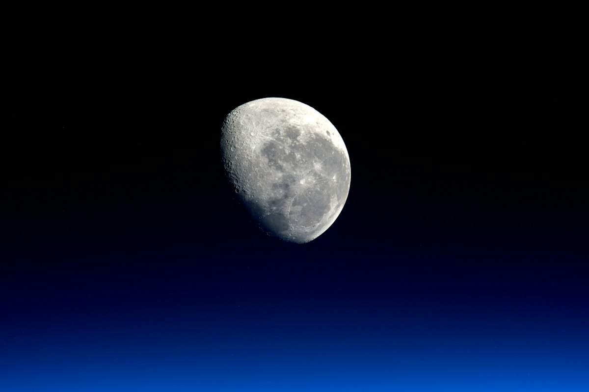

Surveyor 6 Turned the Moon Into a Launch Pad in 1967
The anniversary entry gives a date, two verbs and a superlative, and the argument hides in what it leaves out.

The record begins with a machine
Ask when a vehicle first left the surface of the Moon, and the answer people reach for names astronauts. The dated record says otherwise. NASA's Surveyor 6 made the first successful launch and hop from the lunar surface on November 17, 1967, according to space.com. Ascent from another world stopped being a theoretical problem on that date, aboard a machine with no route into orbit and no way home.
The hop is usually filed as trivia: a robot jumped, then sat back down. As engineering it is a stranger object, a launch flown on the fuel of a hop, which is the cheapest shape the demonstration has ever taken. That word measures the machine and its propellant, and says nothing about a program's books. It also predicts something testable, namely that the interesting failures of surface ascent live at the bottom of the flight rather than in the orbit above it.
What the source actually carries
The sourced facts are four. A NASA probe named Surveyor 6, on November 17, 1967. An event the entry describes as a launch and a hop from the lunar surface. A superlative, first successful, attached to those two verbs. Everything else here is reasoning built on that spine, and it is labeled as reasoning where the labels matter.
The entry carries no altitude, no duration, no distance and no engine description. It also puts the word successful in front of the superlative, and that word is load-bearing. A successful first leaves open whatever the entry does not cover, and this piece will not guess at it. Anyone repeating a hop height for that mission is quoting something other than the entry cited here. That is not the same error as being wrong, and it costs the reader the same amount.
A hop is what the hardware already allowed
To leave the Moon for good, a vehicle has to reach orbital velocity and carry the tank and engine that get it there. To rise and fall back takes a push slightly larger than the machine's own weight, held for a moment. Both are launches. Orbit is arithmetic. The energy bill differs by orders of magnitude.
A lander sitting on the Moon in 1967 had propellant, an engine, structure and controls, and it had no reason to spend the lot on escape. The machinery was already there. So the interesting question was never whether a hop was possible. It was whether anything about standing on the Moon breaks a vehicle the moment you light an engine there. A hop answers that and puts the vehicle back down to answer it again.
The hard part lives at the bottom of the flight
Everything after the vehicle clears the ground is comparatively easy, and that is the least believed sentence in launch work. A rising rocket wants speed, because speed buys stability and options. A hop starts from rest, on a body with no atmosphere. There is no wind. Nothing flows over anything, and the control system holds the vehicle up by itself.
Then there is the ground itself. Soil on an airless body has been pounded by impacts for a very long time, and it behaves like a slow powder. A plume in vacuum has no air to shove aside, so the exhaust drives sideways through the dirt at speed. Lifted soil has nothing to slow it, so it comes back down onto the machine that threw it, and the loop closes with the vehicle inside. Every ascent plan since has had to survive that loop before it reaches orbit.
The vehicle also has to come down again, on a surface its own engine has just rearranged. No ground facility reproduces that pair of facts. A test stand can have the soil, or it can have the exhaust and the real gravity, but it cannot have all three at once without flying. That is why the flight carried information the energy figures do not show.
The case against calling it a milestone
The objection is fair.
A hop is not an orbit. The energy in a hop is a rounding error beside what an ascent stage needs. Any engine worth flying was test-fired on the ground before it shipped. That ground work was routine. If a program had cancelled this flight the following week, the mathematics of leaving the Moon would not have changed. Measured against what ascent requires, a bounce that ends in the same basin proves very little.
Where the objection goes wrong is in choosing the comparison, and the seam is easy to point at. A stand on Earth has air, full weight and dirt that is not lunar. The flight had none of those, and it had the actual surface instead, twice, with the same hardware at both ends. On the narrow question of whether a landed vehicle can launch from where it landed, this record is the experiment rather than an illustration of one.
What the precedent is worth now
Any architecture that lands, works and leaves has to clear the same opening seconds. The modern versions arrive with more mass on ground nobody has surveyed. Traffic around a working site stirs the same powder a plume turns into a hazard. None of that is exotic. The 1967 flight sizes none of it. It does establish that the sequence is not a hypothesis, which is a smaller claim than the one usually attached to it.
This is where a reader should hold the article rather than the archive. Saying that a landed vehicle has launched from another world is a claim about a demonstrated sequence, and the entry supports it. Saying surface ascent is a solved problem is marketing, and the entry cited here does not say it. The distance between those two sentences is the distance between a hop and a schedule.
What stays open
The source gives no altitude, no duration, no distance and no engine description. The refusal is deliberate. Nothing in the entry says whether the hop was the mission's purpose or a favor for a lander with propellant left over. Neither reading changes the argument. Somebody will tell you the altitude in a reply, and the polite question is which book.
There is a bigger gap, and it is structural. A superlative is only as good as the archive behind it, and nothing on the page lets a reader audit that archive. An earlier attempt that failed, or a hop on some other body that the phrasing does not cover, would change the sentence and not the argument. Both possibilities should stay open for anyone quoting the word first.
How to check the claim
Open the entry and mark which two verbs it uses. Launch and hop means the milestone is ascent from a surface, and nothing past that line. Anyone extending it into an orbit or a return trip is writing a second sentence of their own, and they are welcome to, provided they label it.
Then look for the numbers. If the entry lists no altitude and no duration, then any figure in the article in front of you arrived from memory or from a reprint. You are entitled to ask which. That check is cheap, and it is most of the craft in this field. A dated event is worth what its source can carry, and this one carries more than the trivia slot allows.